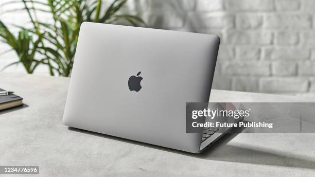
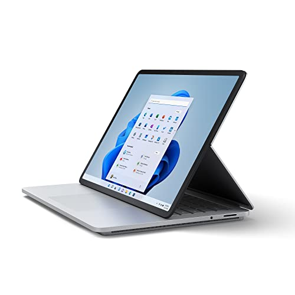
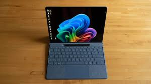

Mac Laptops!
The Top View of the Mac Laptop
Sleek, and ready to be used!
The Top 3 Most Popular Mac Laptops are:

- Apple 13-Inch MacBook Pro w/ 2.5GHz Dual Core i5, 4GB of RAM and 500GB of Storage

- Apple MacBook Pro MD313LL/A 13.3-Inch Laptop

- Apple MacBook Air 13.3-Inch Laptop MD760LL/B, 1.4 GHz Intel Dual Core Processor
Average Prices for Mac Laptops
- $1599.99
- $1199.99
- $999.99
Windows Laptops!
You can also pair a wireless smart mouse with your laptop for maximum productivity
The Top 3 Most Popular Windows Laptops are:

- Microsoft Surface Laptop 5 (15 inch)

- Lenovo Yoga Slim 7

- ASUS TUF Gaming A15
Average Prices for Windows Laptops
- $1299.99
- $1099.99
- $799.99